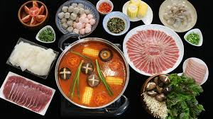

Hotpot

Description
Hot pot is a delightful communal dining experience popular in various Asian cuisines. It involves simmering a variety of fresh ingredients in a flavorful broth at the center of the table. This interactive and customizable meal is perfect for gatherings with family and friends, especially during colder seasons. Whether you prefer a spicy Sichuan-style broth or a mild and comforting chicken broth, hot pot offers endless possibilities for a memorable dining experience.
Ingredients
- Hot pot broth (e.g., chicken, beef, vegetable, or spicy Sichuan)
- Assorted meats (e.g., thinly sliced beef, lamb, or pork)
- Assorted seafood (e.g., shrimp, fish fillets, or squid)
- Fresh vegetables (e.g., Napa cabbage, spinach, mushrooms, and bok choy)
- Tofu or tofu-based products (e.g., tofu puffs or tofu skin)
- Rice or glass noodles
- Dipping sauces (e.g., soy sauce, sesame sauce, or chili oil)
- Garnishes (e.g., chopped green onions, cilantro, and sliced garlic)
Steps
- Prepare the Broth: Select your desired hot pot broth (e.g., chicken, beef, or spicy Sichuan) and bring it to a gentle boil in a hot pot or a large communal pot placed at the center of the table.
- Set Up Ingredients: Arrange the assorted meats, seafood, fresh vegetables, tofu, and noodles on separate plates for easy access.
- Cooking Process: Using chopsticks or a small ladle, place ingredients into the simmering broth to cook. Cooking times may vary depending on the ingredient, but they typically cook quickly due to the hot broth.
- Dipping Sauces: While the ingredients are cooking, prepare dipping sauces by mixing soy sauce, sesame sauce, chili oil, or other condiments according to your taste.
- Enjoy the Experience: Each diner cooks their own ingredients in the broth to their preferred level of doneness. It's a social and interactive meal where everyone can enjoy their custom creations.
- Combine Flavors: Dip the cooked ingredients into your dipping sauces, garnish with chopped green onions, cilantro, and sliced garlic, and savor the delicious flavors.
- Repeat and Refill: Continue adding ingredients to the hot pot and enjoying the meal until you've savored all the delicious combinations.
- Finish with Noodles: Towards the end of the meal, you can add rice or glass noodles to soak up the flavorful broth.
- Appreciate the Broth: By the end of the meal, the broth is often rich and infused with the flavors of all the ingredients cooked in it. It can be enjoyed as a comforting soup.
- Clean Up: Once you've satisfied your appetite, turn off the heat and let the broth cool down. Carefully remove any remaining ingredients and dispose of them properly.